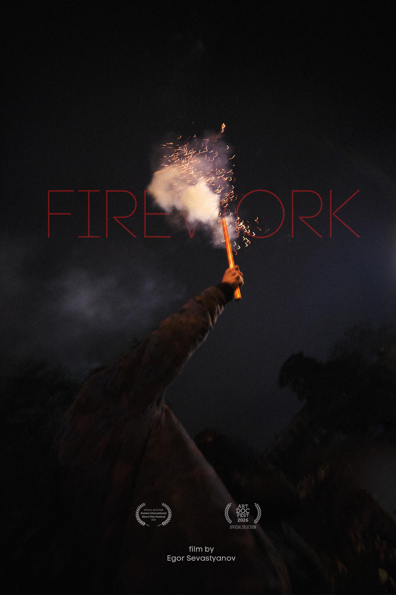

2024–2025
Firework integrates real-time radio broadcasts, street sound and live signal processing into an evolving audiovisual transmission.
Firework was recorded live during the night between December 1–2, 2024, during the closing event of the Rubezh festival in Tbilisi.
At the same time, protests and clashes were unfolding across the city. Fireworks, chants, police sirens, radio transmissions and fragments of street sound became part of the performance.
No prerecorded samples were used.
All external sounds emerged in real time through live broadcasts, radio signals, microphones and environmental audio sources, processed during the performance itself.
The work explores the boundary between documentation and transformation, where unstable reality becomes musical structure.